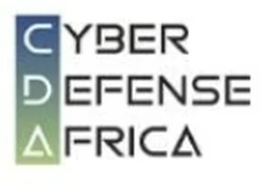

MiabeInnovation
ActuellementOct. 2025 → Aujourd'huiAgent cybersécurité.
Expériences et contexte professionnel.
Agent cybersécurité.
Agrégateur de paiement Mobile Money pour les PME togolaises.
KoudiPay agrège les paiements Mobile Money (Flooz, Mixx by Yas) pour permettre aux PME togolaises d'encaisser simplement en ligne.
En tant que co-fondateur et responsable cybersécurité, je porte la sécurité applicative de la plateforme : protection des flux de paiement, des données clients et des accès.
Tests d'intrusion et audits de sécurité autorisés.
Missions de test d'intrusion réalisées dans un cadre autorisé, dont l'audit d'une plateforme web d'IPNET Institute : identification, exploitation contrôlée et rapport de remédiation.

IPNET Institute of Technology · Lomé
Application de benchmarks de sécurité (GPO) pour durcir des environnements Windows Server et Linux et réduire la surface d'attaque.
Audits de sécurité réguliers pour vérifier la conformité des systèmes aux bonnes pratiques.
IPNET Institute of Technology · Lomé
Configuration et gestion de FortiGate (v7.4) et OPNsense pour une protection périmétrique complète.
Déploiement d'IPS/IDS, de filtrage web et de tunnels VPN pour un trafic sécurisé et supervisé ; optimisation des règles pour concilier performance et protection.
IPNET Institute of Technology · Lomé
Conception et déploiement d'architectures AD sécurisées, centrées sur la gestion des identités et le contrôle d'accès.
Application du principe de moindre privilège pour limiter les menaces internes et l'élévation de privilèges.

Cybersecurity & Digital Forensics Training.
Ambassadeur d'ICDF Academy, organisme de formation en cybersécurité et investigation numérique : je fais connaître ses programmes et relaie ses formations auprès de la communauté.

10e édition · Siège de Cyber Defense Africa.
Invité après avoir remporté le jeu « Le plus grand défi d'un SOC » organisé par Cyber Defense Africa et l'ANCy, parmi trois gagnants retenus pour la précision de leurs réponses.

Conférence de la communauté Python au Togo.